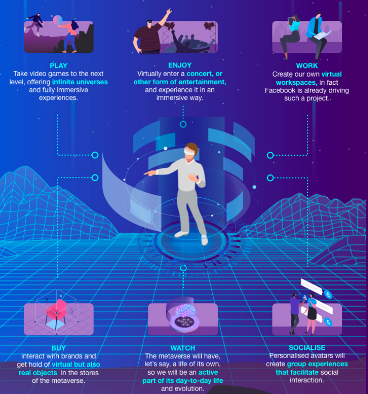

Metaverse
What is Metaverse?
The Metaverse is some of the hottest tech terms in recent years. Meta Platforms, Inc. describes the metaverse as a set of virtual spaces where people can meet unphysically (Bosworth and Clegg, 2021). According to Mark Zuckerberg (2022), its key attributes are immersive and interoperability. The Metaverse is a sophisticated communication tool where you can fully immerse yourself socially, professionally, and commercially (QuHarrison et al., 2022). The Metaverse is an immersive virtual world where people have feelings of presence and see others' facial expressions (Zuckerberg, 2022). People use avatars to represent themselves in the metaverse and communicate. Currently, users can teleport in the Metaverse by putting on a VR headset.
"To put it simply, the Metaverse can be regarded as a 3D version of the internet"
(QuHarrison et al., 2022)
The effects of Metaverse
Blockchain
The Importance
Business runs on information. The faster it's received and the more accurate it is, the better. Blockchain is ideal for delivering that information because it provides immediate, shared and completely transparent information stored on an immutable ledger that can be accessed only by permissioned network members. A blockchain network can track orders, payments, accounts, production and much more. And because members share a single view of the truth, you can see all details of a transaction end to end, giving you greater confidence, as well as new efficiencies and opportunities.
Knowing more about it...
Distributed ledger technology
All network participants have access to the distributed ledger and its immutable record of transactions. With this shared ledger, transactions are recorded only once, eliminating the duplication of effort that's typical of traditional business networks.
Immutable records
No participant can change or tamper with a transaction after it's been recorded to the shared ledger. If a transaction record includes an error, a new transaction must be added to reverse the error, and both transacions are then visible.
Facilitates the process of recording transactions
Each block is connected to the ones before and after it.
These blocks form a chain of data as an asset moves from place to place or ownership changes hands. The blocks confirm the exact time and sequence of transactions, and the blocks link securely together to prevent any block from being altered or a block being inserted between two existing blocks.
Tracking assets in a business network
As each transaction occurs, it is recorded as a “block” of data.
Those transactions show the movement of an asset that can be tangible (a product) or intangible (intellectual). The data block can record the information of your choice: who, what, when, where, how much and even the condition — such as the temperature of a food shipment.
Greater trust
With blockchain, as a member of a members-only network, you can rest assured that you are receiving accurate and timely data, and that your confidential blockchain records will be shared only with network members to whom you have specifically granted access.
Greater security
Consensus on data accuracy is required from all network members, and all validated transactions are immutable because they are recorded permanently. No one, not even a system administrator, can delete a transaction.
More efficiencies
With a distributed ledger that is shared among members of a network, time-wasting record reconciliations are eliminated. And to speed transactions, a set of rules - called a smart contract - can be stored on the blockchain and executed automatically.
Easier to understand: reducing risk and cutting costs for all involved.
NFT
.png)
What are NFTs?
The full name of NFTs is Non-Fungible Tokens. Non-fungible means not easy to exchange or mix with other similar goods or assets.
NFTs can define digital scarcity and value, and prove ownership. In the current digital world, it is difficult to trace owners as anyone can click to screenshot, copy and download. However, NFTs record unique identification information on the blockchain.
It enables each asset to have its unique identity, endowing the asset with unique meaning, thereby increasing its market value.
Misconception of NFTs
Cryptocurrencies ≠ NFT
NFT is slightly different from cryptocurrency. Cryptocurrencies such as Bitcoin and Ethereum are “ homogeneous” assets, and the value of each piece is the same; while NFT is “non-homogeneous” asset. Each one is unique.
Types of NFT
The hottest NFTs in the market belong to this category, such as CryptoPunks, Bored Apes Yachat Club, CLONE X, etc. In general, this type of NFT has a relatively low threshold and is the first choice for most new entry-level NFTs.
This type of NFT is a fusion of art and algorithm programs. Artists write a algorithm to generate different artworks. Most the famous generative art works come from Art Blocks, a platform that focuses on curating programmatically generated art works. Interested people can go to here for further information.
NFT props really belong to players, but they only can be used in the related game currently. For example, CryotoKitties, a virtual cat game, generate cats with its own characteristics ramdomly, including different colors, pupils and cattributes. Thus, each cat is unique. Users can produce next generation by matching the cats and selling their cats in the market, some cats with rare attributes can be slod for 600ETH (about US$ 2 million). The game NFT is still in the development stage, and more changes will be in the future.
User can make videos into NFTs, such as the NBA Top Shot, which turns players' Moment videos into NFT player cards.
Music obviously is included in the wide range of varieties of NFT. Famous Amercian musician Steve Aoki released a 30-second audio-visual "Hair" NFT, sold for $880000, and more and more musicians are considering engage in the NFT market.
How does NFT works in Metaverse?
NFTs allow you to own interoperable digital goods in the metaverse. NFTs can be your metaverse digital goods like your avatars, avatar clothing, weapons and virtual decorations.
Application
Relationships
"Blockchain and NFT are the components of Metaverse"
(Mary, 2022)

How they make betterment in the world
Best examples:
Axie Infinity
Metaverse games are especially evident when it comes to examples of the metaverse. This online video game is NFT-based and features digital pets, known as Axis, that battle, build and hunt for treasure in an expanding metaverse-type universe.
Otherside
Similar to Sandbox and Decentraland, Otherside is a virtual world and multiplayer game where players can design and develop NFT-based land and interact in a number of ways.
10 real-world metaverse use cases
1. immersive entertainment
2. business operation
3. improved education and training
4. enhanced customer experiences
5. work meetings
6. advertising, branding and market opportunity
7. new revenue streams
8. a more connected virtual work experience
9. industries use
10. still-unknown uses